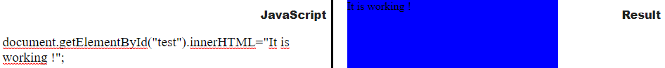

Welcome to Web Code Reader
WebCode reader is a website developed by Harun Hasić for the course Web Application Development(CS412). The websites main functionality and goal is to read and translate HTML, CSS and JavaScript code and display results in the same web page. The result is an iframe that presents the new made website. WebCode Reader can be used to learn and study HTML CSS and Javascript technologies for begginers and is a great tool to help new students easily understand these basic web languages.
How to use Web Code Reader
WebCode Reader has the ability to toggle between HTML CSS and JS. This means that you can develop with ease because You can hide your CSS or HTML or JS so that you can focus on one of the parts of your website. Following are instructions on how to use the website.
HTML
To write Your HTML code, toggle the „HTML“ button and write Your code in the window designated for HTML. Using classes and ids is recommended and You should always try to use them. Example:

CSS
To write Your CSS code that will respond to your HTML code, use the CSS window on the website. To toggle it, choose „ CSS“ button and then write code. If You want to apply some CSS to the entire webpage, write html{ *code goes here*}. For applying code to certain classes and ids, write Your css outside the html{} tag. Example:

JavaScript
To write JavaScript Code, toggle the JS button and then you can use the JavaScript window for the code. Here is an example. We will change this HTML code with a javascript function. Now we will enter javascript to change the „test“ div contents. Here is the test div in HTML:
Now we change it contents using the JavaScript.
If you have any questions and comments please email me! My email : harunze@outlook.com.